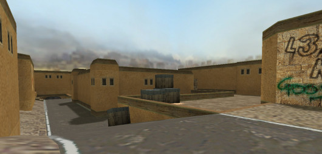

Since sounds are just audio files, they can be used for anything! But we will try our best to let you know what game it was for. There will also be audio previews here!
| Sound Effects Name: | Description: (describe the sound) |
|---|---|
| CSGO Texture for Dust II  |
Game: Counter-Strike 1.6 Global Offensive textures for the 1.6 game dust2 map. Link: Direct Download |
Dust no desert |
Game: Counter-Strike 1.6 Replaces old sandy textures with grass. Instructions: Open console and type:
|